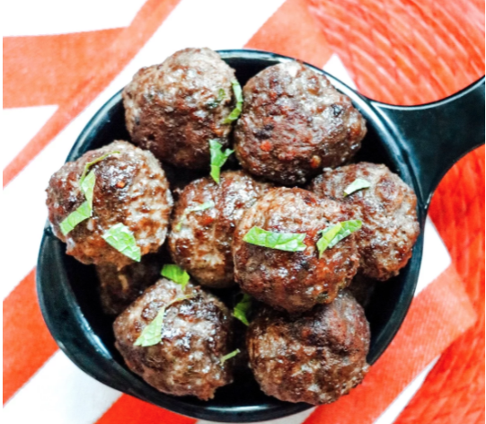

Turkish Meatballs(Kofta)

Description
If you are looking for a tasty main dish meal, try my new Turkish meatballs.
Prep:
20 mins
Cook:
4 mins
Total:
24 mins
Servings:
6
Yield:
36 meatballs
Nutrition Info
Ingredients
- 2 slices slightly stale whole wheat bread
- 1 pound lean ground lamb
- 1 egg
- 2 tablespoons chopped fresh parsley
- 2 cloves garlic
- 1 teaspoon ground cumin
- 1 teaspoon dried mint
- ½ teaspoon ground allspice
- ½ teaspoon salt
- ½ teaspoon ground black pepper
- 1 tablespoon olive oil
Directions
-
Tear up bread slices into the bowl of a food processor; process into fine crumbs. Add ground lamb and egg;
process until blended. Add parsley, garlic, cumin, mint, allspice, salt, and pepper; process until evenly
combined.
- Roll lamb mixture into small meatballs.
- Heat olive oil in a large skillet over medium heat. Cook meatballs in batches, turning occasionally, until
browned on all sides, 4 to 5 minutes per batch. Transfer to a paper towel-lined plate using a slotted spoon.